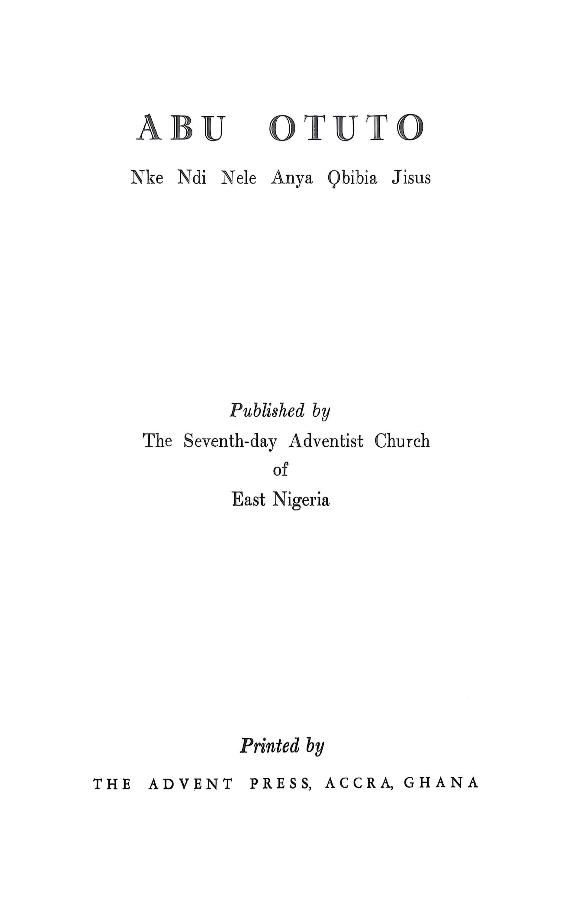

Title page

Igbo SDA Hymnal · A book of praise, preserved
Search by hymn number, Igbo or English title, or first line.
Type a hymn number and press Enter to open it directly. You can also search Igbo or English titles and first lines.
Categories follow the original Order of Hymns. Hymn 295 is listed in the book but its scan is missing.
